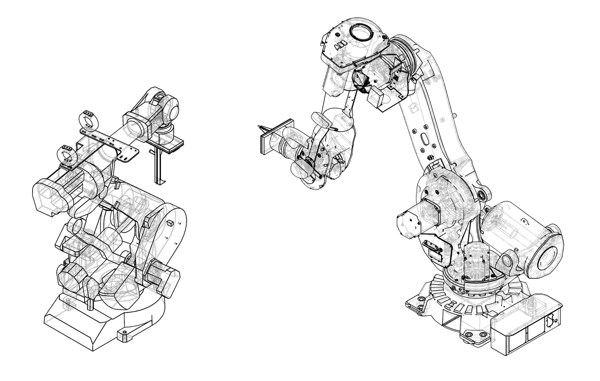
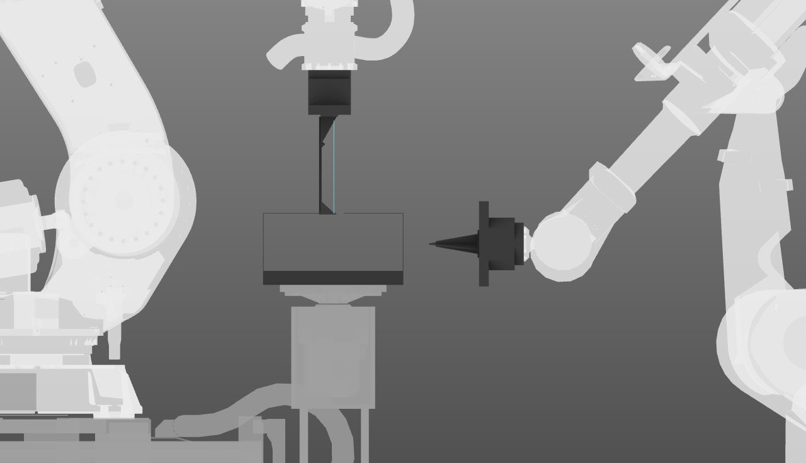
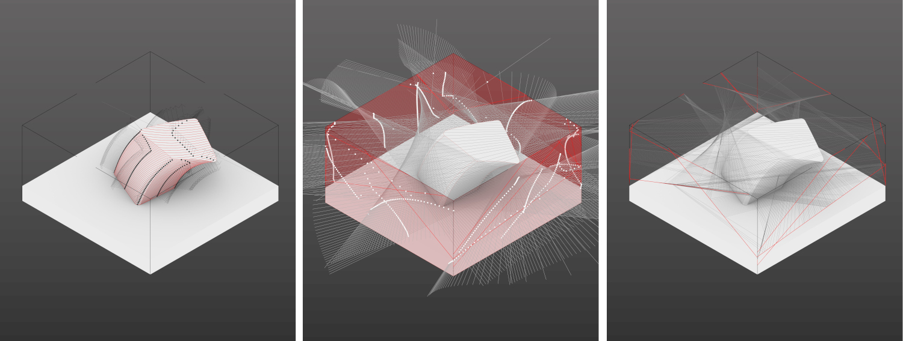
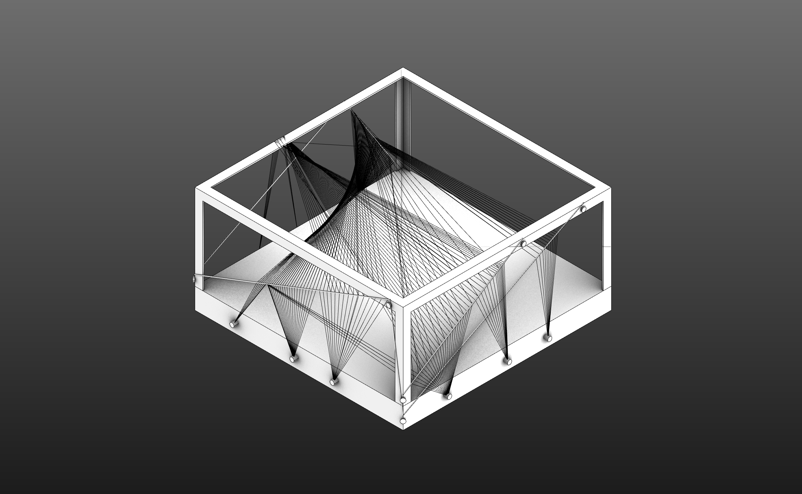

Inverted Weaving: Robotic Collaboration (2020)
Collabrative Weaving is a robotic research/fabrication project that proposes a system that utilizes robotic weaving based on an object. This project was a collaboration between Nick Coppula and Samuel Losi.

This process required collaboration between two robots and was written in RAPID and HAL for grasshopper. The ABB 4400 robot moves the material to a position inside the frame and the ABB 6640 robot loops the material onto a fastening system on the exterior of the frame. This robotic collaboration enables the internal complexity of weaving while maintaining a regular external frame geometry, which is then expressed by repeatedly bringing numerous strands back to a set of fixed positions.

The project's form has a complex, spatial interior rather than a regulated exterior. This makes it distinct from many precedent projects which heavily rely on robotically woven structures aptly described as “shells”. The collaborators proposed a system of weaving that is adaptable and builds upon the existing formal language surrounding robotically woven structures. Inverted weaving was the development of an inside-out approach to weaving where the basic frame becomes external and the complexity becomes internal.

